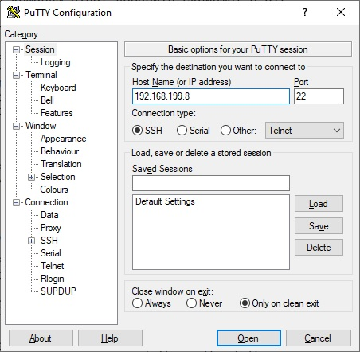
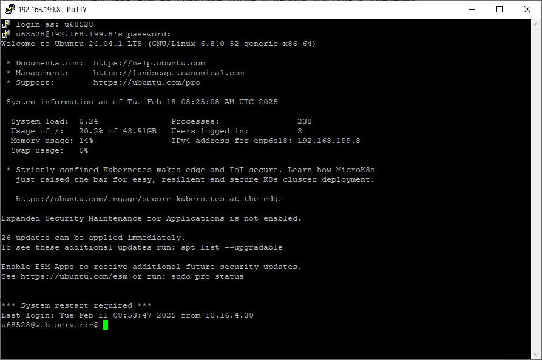
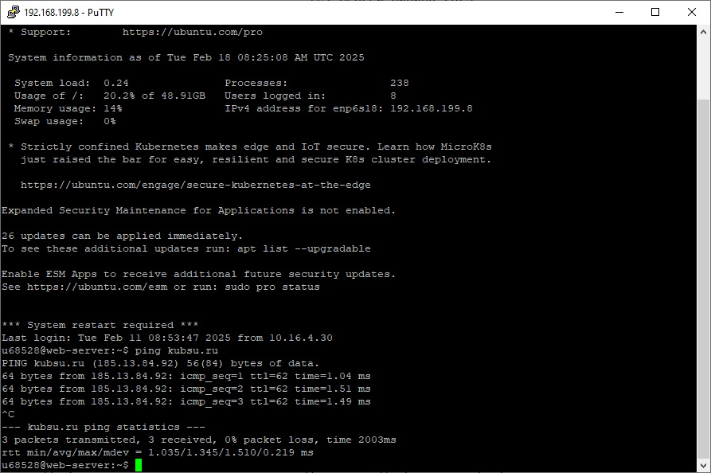
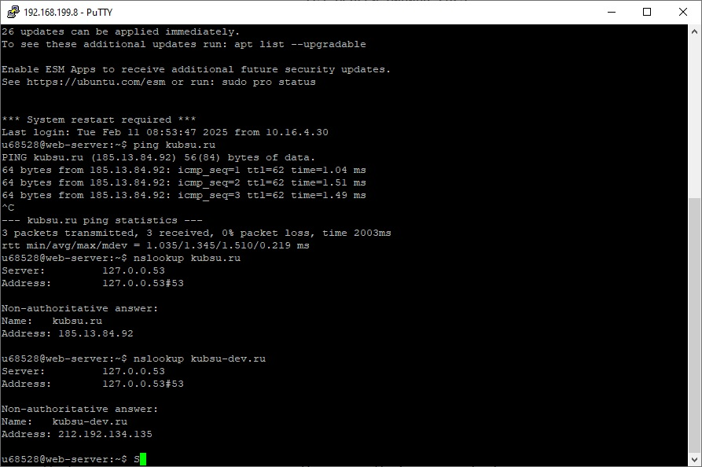
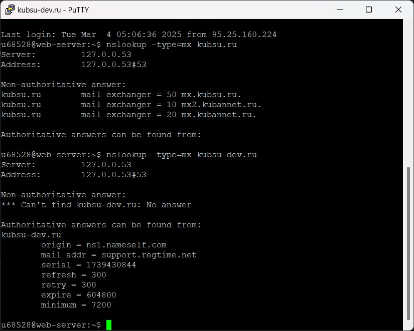
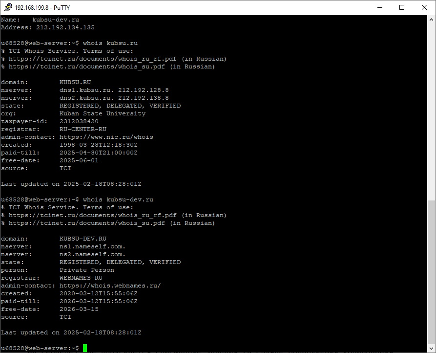
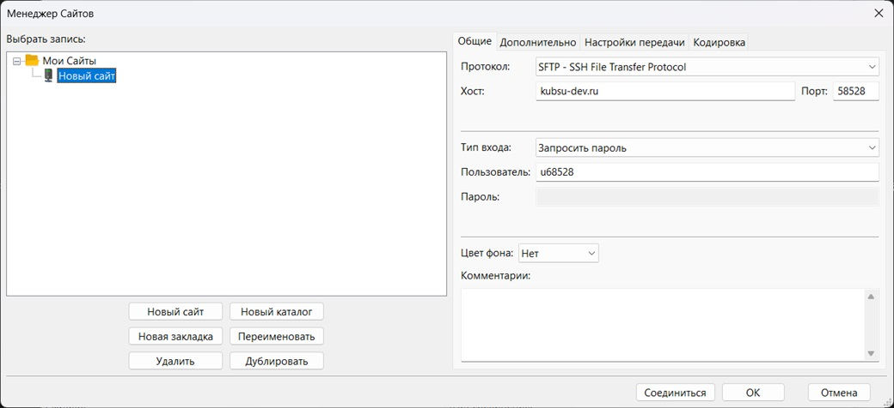
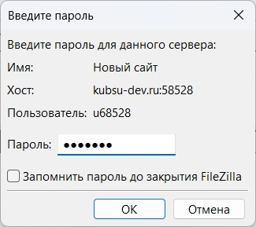
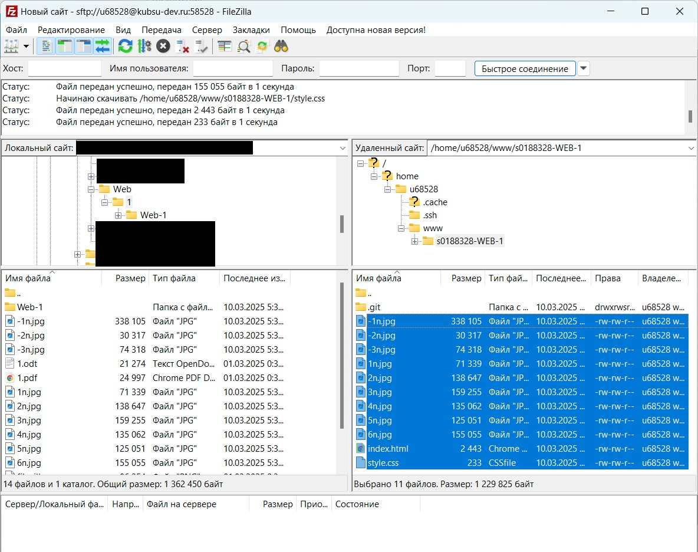

Подключение к учебному серверу по SSH с помощью клиента Putty,
 С помощью утилиты ping (утилита для проверки целостности и качества соединений в сетях на основе TCP/IP) на учебном сервере узнаем IP-адрес веб-сервера kubsu.ru
С помощью утилиты nslookup узнаем ресурсные DNS A-записи доменов kubsu.ru и kubsu-dev.ru. Запись A - адресная запись, соответствие между именем и IP-адресом.
С помощью утилиты nslookup c флагом -type=mx узнаем MX-записи доменов kubsu.ru и kubsu-dev.ru. Запись MX - адрес почтового шлюза для домена. Состоит из двух частей — приоритета и адреса узла
С помощью утилиты whois узнаем дату регистрации домена kubsu.ru
С помощью программы FileZilla соединяемся с учебным сервером по протоколу SFTP
 Копируем на локальный компьютер файлы задания из каталога www
